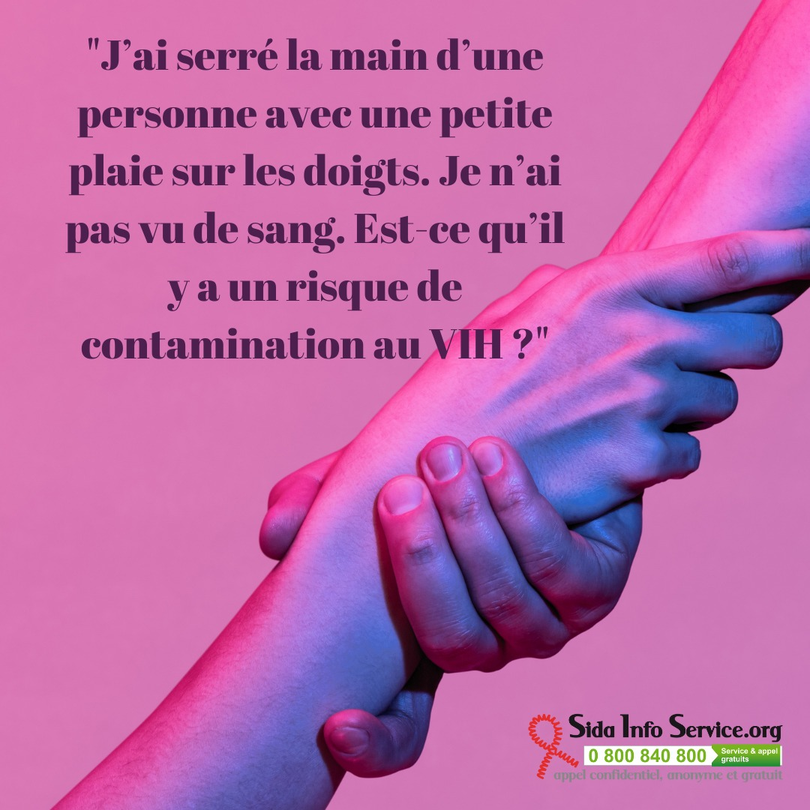

15
Jan
Sida Info
Pas besoin de faire durer le suspense : Non il n’y a aucun risque de contracter le VIH dans cette situation ! Pour contracter le VIH, il faudrait que vous ayez vous-même une plaie ouverte, que cette plaie soit directement en contact avec une quantité suffisamment importante de sang, et que l’autre personne blessée soit elle-même porteuse du VIH et ne soit pas sous traitement. Avouez que cette situation est hautement improbable, ne serait-ce que parce qu’on se serre rarement la main lorsqu’on pisse le sang… Autre point pour te rassurer : Il n'y a pas de transmission du VIH par le biais de petites plaies superficielles. Il n'y a pas non plus de transmission du VIH par le biais de sang sec ou de taches de sang sec.